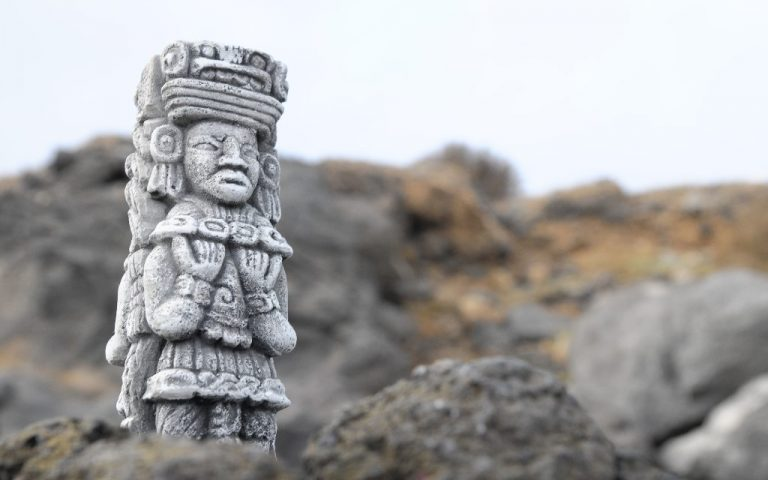
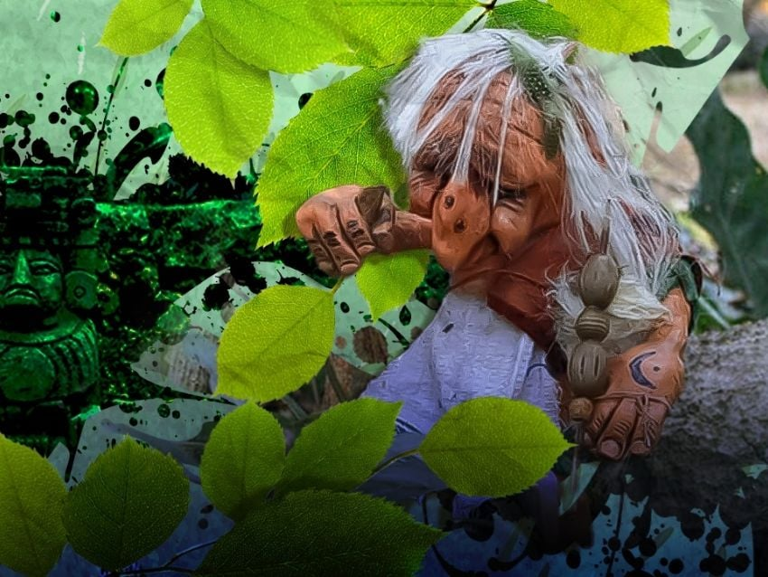

Dentro de la cultura yucateca, existe la leyenda de los Aluxes, pequeños seres mitológicos de la península de Yucatán que protegen pueblos, siembras y la naturaleza de la selva o áreas mayas. Generalmente invisibles, se dice que pueden adoptar forma física cuando desean jugar o hacer travesuras, aparentando ser similares a los mayas con sus vestimentas tradicionales. Algunas versiones los describen como seres que asimilan a los dioses, catalogándolos como semidivinos.

Según las historias compartidas por los lacandones, los Aluxes actúan según el trato que se les dé. Si alguien entra a su territorio gritando o diciendo groserías hacia estas criaturas, ellos responderán alejándolos transmitiendo una enfermedad por el aire, conocida comúnmente como el "mal aire". En cambio, si se les ofrece alimento, ellos cuidarán las siembras e incluso ayudarán a obtener una buena cosecha.

Notas relevantes:
Se cree que los Aluxes pueden manifestarse en la realidad de diferentes maneras, desde
causar pequeñas travesuras hasta realizar actos de protección y ayuda hacia las personas que los tratan con
respeto. También se dice que si se les ofrece un cigarro encendido, pueden otorgar buena suerte y protección a
quien lo ofrezca.